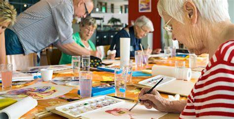
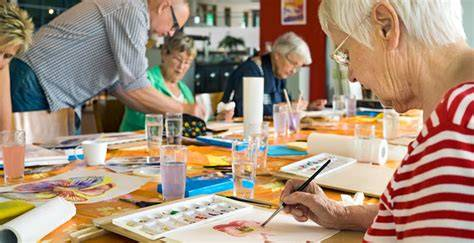
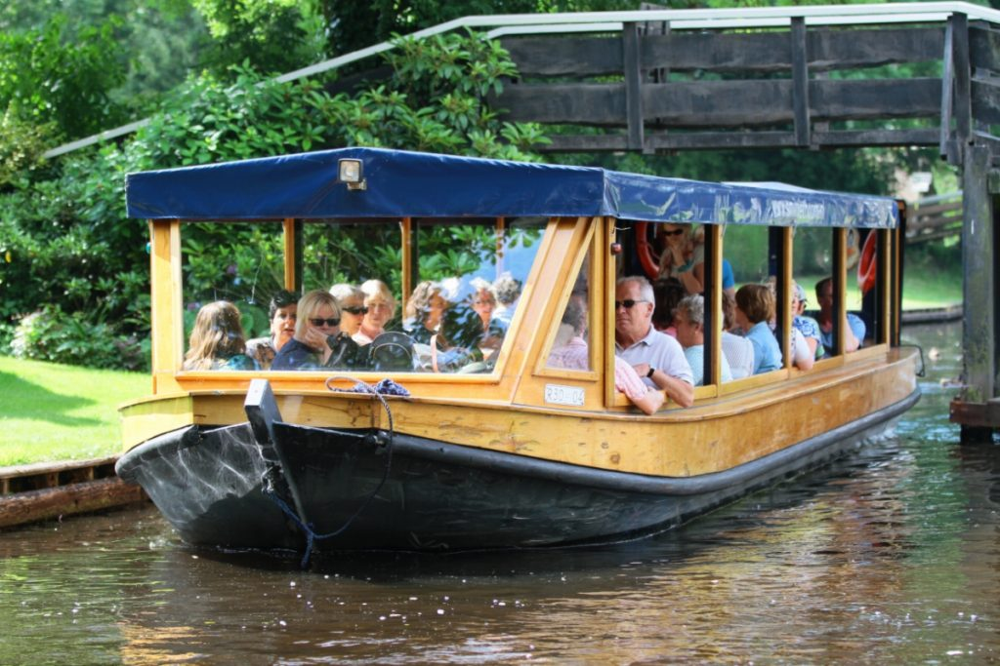
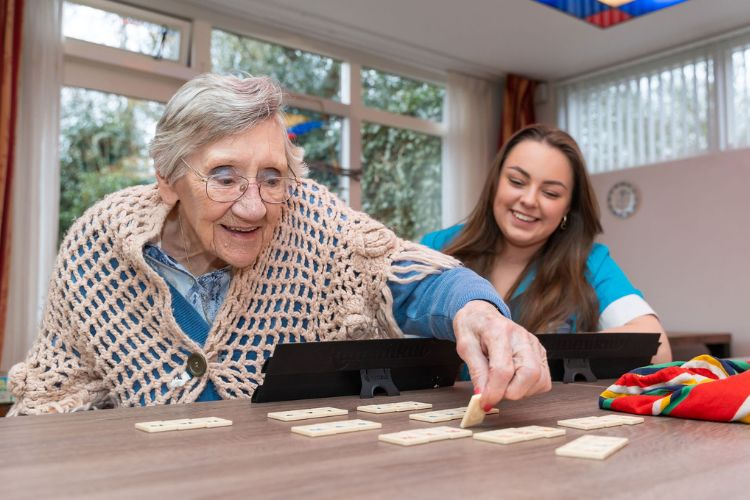

Workshops & trainingen
Speciale workshops gericht op persoonlijke ontwikkeling, het ontdekken van nieuwe hobby’s en het versterken van vaardigheden.

Een dag vol beweging, creativiteit en gezelligheid. Activiteiten afgestemd op de behoeften en mogelijkheden van ouderen. Hieronder vindt u een overzicht van ons programma.
Rustige gymoefeningen, wandelen in de buurt en spelmomenten zorgen voor plezier én een goede lichamelijke conditie. Activiteiten zijn afgestemd op alle niveaus, zodat iedereen kan meedoen op zijn of haar eigen tempo.
Onze begeleiders stimuleren interactie en teamgeest tijdens spelactiviteiten. Denk bijvoorbeeld aan gezelschapsspellen, kaartspellen of lichte sportoefeningen. Zo bevorderen we niet alleen de fysieke gezondheid, maar ook het sociale welzijn.
Daarnaast organiseren we af en toe speciale sportdagen of challenges om de motivatie en betrokkenheid te vergroten. Dit geeft ouderen een gevoel van prestatie en plezier, en zorgt voor een positieve groepssfeer.
Ontmoet elkaar rondom muziek, verhalen, taal en tradities. Culturele activiteiten stimuleren cognitieve vaardigheden en sociale interactie, en zorgen dat iedereen zich verbonden voelt met elkaar en de omgeving.
Tijdens onze culturele sessies ontdekken deelnemers nieuwe muziekgenres, tradities en verhalen. We moedigen persoonlijke expressie aan door zang, voordrachten of het delen van eigen ervaringen. Dit versterkt het zelfvertrouwen en de sociale band binnen de groep.
Ook organiseren we uitstapjes naar lokale culturele evenementen, musea of tentoonstellingen. Zo kunnen ouderen hun horizon verbreden en nieuwe inspiratie opdoen, terwijl ze samen plezier beleven en sociale contacten onderhouden.
Tekenen, handwerken, koken en samen aan tafel genieten van maaltijden. Creatieve activiteiten bevorderen ontspanning, zelfexpressie en het plezier van gezamenlijk creëren.
Onze begeleiders bieden begeleiding bij diverse creatieve workshops, zoals schilderen, handwerken of koken. Hierbij ligt de nadruk op plezier en persoonlijke ontwikkeling, zodat iedereen met trots zijn of haar werk kan laten zien.
Daarnaast organiseren we proeverijen en culinaire thema-avonden. Ouderen leren nieuwe smaken kennen, bereiden samen gerechten en delen verhalen rond de tafel. Dit versterkt sociale interactie en zorgt voor gezellige momenten.
Speciale workshops gericht op persoonlijke ontwikkeling, het ontdekken van nieuwe hobby’s en het versterken van vaardigheden.
Bezoek aan musea, parken en culturele evenementen voor sociale interactie en plezier.
Feestdagen, seizoensvieringen en speciale evenementen om verbinding en gezelligheid te creëren.
